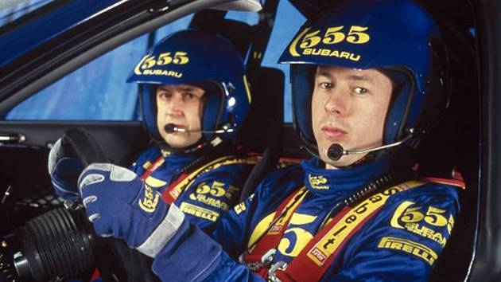

La década de los 90 fue una era dorada para el WRC, con pilotos legendarios como Colin McRae, Tommi Mäkinen y Carlos Sainz dominando las pistas.
Los autos como el Subaru Impreza, Mitsubishi Lancer Evo y Toyota Celica GT-Four marcaron la pauta con su tecnología y diseño innovador.
Eventos como el Rally de Montecarlo y el Rally de Finlandia de los 90 destacaron por su dificultad y emoción, atrayendo a miles de fanáticos.